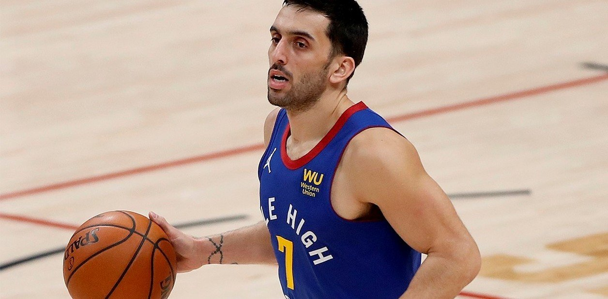

Con un gran aporte del base argentino, quien sumó 12 puntos en 27 minutos, los Nuggets vencieron 106-105 a Portland.
¡Ahora sí, Facu! Después del partido frente a Memphis, en el que Facundo Campazzo estuvo peleado con el aro y sólo sumó tres puntos, con 1/7 desde el perímetro y 0/1 en dobles, el base argentino tuvo revancha en la noche del miércoles y su aporte fue fundamental para conseguir una ajustada victoria 106-105 frente a Portland. El cordobés se despachó con cuatro triples en lo que fue el cuarto triunfo al hilo de los dirigidos por Michael Malone.
Luego de un partido que fue muy parejo desde el comienzo, punto a punto en algunos tramos, se llegó a un final apretadísimo, donde ninguno de los dos estuvo muy fino a la hora de cerrarlo. De hecho, Portland tuvo la última bola del juego para ganarlo, tras un robo de Damian Lillard, pero el tiro de Norman Powell no entró.
Esta victoria fue una nueva muestra de caracter de los Nuggets, ante la ausencia clave de Jamal Murray, quien fue operado este mismo miércoles del desgarro del ligamento cruzado anterior en el rodilla izquierda que sufrió en el partido frente a Golden State Warriors. Los conducidos por Malone ya ganaron los cuatro partidos que tuvieron que disputaron sin su base titular (Miami Heat, Houston Rockets, Memphis Grizzlies y el de ayer).
Por su baja, sumada a la de Monte Morris, quien se recupera de una distensión en el isquiotibial de la pierna derecha, Facu fue titular por sexta vez desde su llegada a la NBA y otra vez cumplió con creces en su rol como armador del equipo y pieza clave en la defensa. Y encima, a eso le sumó su buena efectividad en el tiro de tres.
Así, el argentino, que tuvo la dura tarea de marcar a Lillard, la figura de Portland, durante los 27 minutos que estuvo en cancha, sumó 12 puntos (4/5 en triples y 0/1 en dobles), 5 rebotes, 3 asistencias, 1 tapa y una sola pérdida. Entre Facu y PJ Dozier complicaron más de la cuenta a Lillard, quien volvió a las canchas después de tres partidos ausente por una tendinopatía en los isquiotibiales de la pierna derecha.
El base de los Trail Blazers cerró la noche con 22 puntos (9/23 en tiros de cancha cancha y 2/10 en triples), números muy por debajo de su promedio. La gran figura en la victoria de Denver, una vez más, fue Nikola Jokic, con una cosecha de 25 puntos, 9 rebotes y 5 asistencias.
Con la victoria, el equipo dirigido por Malone mejoró su récord a 38-20 y se mantiene en la cuarta posición de la Conferencia Oeste. Mientras que Portland, sumó su tercera caída al hilo y marcha sexto, con 32 triunfos y 26 derrotas.
El próximo partido para Denver será este viernes,a las 23, en un nuevo encuentro frente a Golden State. Será la revancha para Facu y los Nuggets luego de la derrota sufrida el 12 de abril, en la noche en la que un intratable Stephen Curry se despachó con 53 puntos.